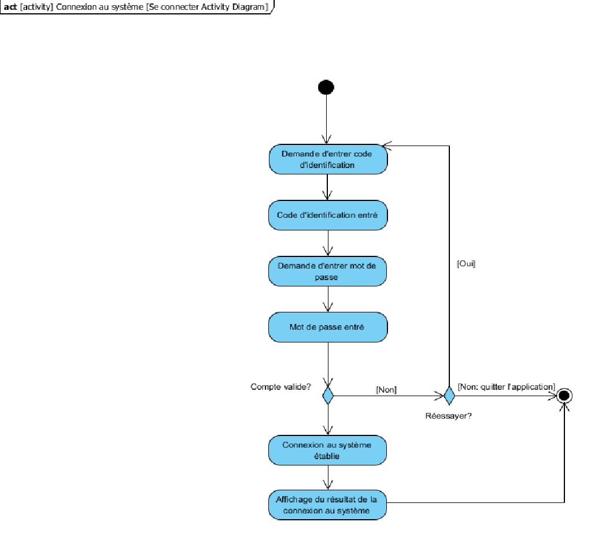

Cadre du projet
Contexte
Depuis le développement du vaccin de la COVID-19, GoodPeople, un organisme à but non lucratif, prête main-forte au gouvernement Canadien pour la campagne de vaccination. Présentement, GoodPeople offre 4 services: la prise de vaccin, le suivi futur de la 2e dose de vaccin, la preuve de vaccination et le changement/annulation/prise de rendez-vous.
Problèmes à résoudre
Voici les deux problèmes à résoudre qui encombrent GoodPeople. Tout d’abord, les dates fixées avec les clients ne sont pas garanties, et par conséquent, les clients se présentent pour potentiellement repartir sans avoir été vacciné et cela peut amener la frustration des clients et une perte de confiance au système de GoodPeople. Puis, à la suite de la première dose de vaccination, la prise de rendez-vous pour la deuxième dose se fait dans un intervalle de temps trop long. Cela peut créer des délais dans la campagne de vaccination.
Portée
Cette problématique touche toutes les personnes locales de 18 ans et plus qui veulent se faire vacciner et les employés et bénévoles de VaxTodo et de GoodPeople ainsi que les professionnels de la santé.
Répartition des tâches
Kevin Lessard
- Comprendre la problématique et les besoins du clients (Scénario)
- Préparer des entrevues et poser des questions au client pour plus de clarté
- Définir les exigences (besoins fonctionnels/non fonctionnels, volontés)
- Créer des cas d’utilisation
- Créer les prototypes
- Évaluer les risques
- Création du glossaire
- Créer les diagrammes d'activités
- Créer le prototype fonctionnels
- Écrire des tests unitaires
- Écrire la documentation
Mendel Sun
- Comprendre la problématique et les besoins du clients (Scénario)
- Préparer des entrevues et poser des questions au client pour plus de clarté
- Définir les exigences (besoins fonctionnels/non fonctionnels, volontés)
- Créer les prototypes
- Créer des cas d’utilisation
- Définir les hypothèses
- Création de l'échéancier et des tâches
- Mettre à jour l'analyse
- Créer les besoins matériels
- Créer les contraintes physiques et conceptuelles
- Créer le diagramme de séquence
- Écrire des tests unitaires
- Coder l'implementation du système
Antoine Ho
- Comprendre la problématique et les besoins du clients (Scénario)
- Préparer des entrevues et poser des questions au client pour plus de clarté
- Définir les exigences (besoins fonctionnels/non fonctionnels, volontés)
- Créer des cas d’utilisation
- Créer les prototypes
- Répartition des tâches
- Trier les tâches par ordre de priorité
- Créer le diagramme de classe
- Créer le diagramme de séquence
- Écrire des tests unitaires
- Coder l'implémentation du système
Échéancier 2021 Automne
Semaine 1 (12 septembre - 18 septembre)
Création du projet dans github, première compréhension du projet, formulation de questions à envoyer à GoodPeople pour la semaine 2.
Semaine 2 (19 septembre - 25 septembre)
Envoies des 5 premières questions à GoodPeople, deuxième compréhension du projet, formulation de questions à envoyer à GoodPeople pour la prochaine semaine, répartition des tâches, écrire le contexte, écrire les problèmes à résoudre, écrire la portée
Semaine 3 (26 septembre - 2 octobre)
Troisième compréhension du projet, envoyer les 3 premières questions à GoodPeople , définir la priorisation des tâches, écrire les hypothèses, identifier le vocabulaire intéressant (glossaire) et commencer à penser aux cas d’utilisations et aux besoins.
Semaine 4 (3 octobre - 9 octobre)
Quatrième compréhension du projet, définir les besoins fonctionnels (cas d’utilisation et scénarios), définir les besoins non-fonctionnels et finir les prototypes, évaluer les risques
Semaine 5 (10 octobre - 16 octobre)
Comprendre les nouveaux besoins du client
Semaine 6 (17 octobre - 23 octobre)
Ajustement du projet pour corriger les erreurs survenu au projet
Semaine 7 (24 octobre - 30 octobre)
Définir les besoins matériels, contraintes physiques et conceptuelles, commencer diagramme d'activités
Semaine 8 (31 octobre - 6 novembre)
Finaliser diagramme d'activités, faire le diagramme de classe et diagramme de séquences
Semaine 9 (7 novembre - 13 novembre)
Finaliser prototype fonctionnel (implémentation)
Semaine 10 (14 novembre - 21 novembre)
Re-travailler sur le prototype fonctionnel (implémentation)
Semaine 11 (22 novembre - 29 novembre)
Ajouter les fonctionalités du prototype
Semaine 12 (30 novembre - 6 decembre)
Continuer à implémenter les fonctionalités
Semaine 13 (7 decembre - 14 decembre)
Écrire la documentation et les tests unitaires
Semaine 14 (15 decembre - 19 decembre)
Finaliser le rapport et génération des fichiers nécessaires
Priorisation des tâches
Essentielle:
- Comprendre la problématique et les besoins du clients
- Préparer des entrevues et poser des questions au client pour plus de clarté
- Créer les cas d’utilisation
- Créer les scénarios
- Besoins matériels
- Contraintes physiques et conceptuelles
- Créer le diagramme de classes
- Créer le prototype fonctionnel
- Implémenter le prototype fonctionnel
Nécessaire:
- Définir les exigences (besoins fonctionnels/non fonctionnels, volontés)
- Création du glossaire
- Création de l'échéancier et des tâches
- Créer les prototypes
- Créer les diagrammes d'activités
- Créer le diagrammes de séquences
- Écrire tests unitaires
Importante:
- Trier les tâches par ordre de priorité
- Évaluer les risques
- Répartition des tâches
- Définir les hypothèses
- Écrire la documentation
Échange avec le client
Rencontre 1:
Question 1: À part pour le suivi pour les futures doses, quelles sont les autres requêtes liées à la vaccination?
"[...] telles qu'une demande de preuve de vaccination ou une demande de changement ou d'annulation d'un rendez-vous."
Question 2: Quelles sont les plages horaires de vaccination disponibles qu'une personne peut sélectionner pendant une journée?
"[...] de 8h à 18h."
Question 3: Combien de temps faut-il minimum entre les deux doses de vaccination? (permet d'ajouter une contrainte de temps)
"Si oui, l'employé utilise le calendrier de rendez-vous pour choisir une date qui convient au visiteur dans un délai minimum d'un mois."
Question 4: Quelle est la durée des tranches de temps disponible pendant une journée au client pour choisir? (10 min? 30 min?)
"[...] correspondant à une plage horaire (8h, 9h, 10h...17h)."
Question 5: Quelle est la capacité maximale d'accommodation de clients pour chaque tranche de temps?
"une plage horaire est limité à 15 rendez-vous."
Rencontre 2:
Question 1: Est-ce que les vaccinateurs, chargeurs et injecteurs sont la même personne? Si non, quelles sont leurs différences?
"Les vaccinateurs, chargeurs et injecteurs sont des exemples de professionnel de la santé"
Question 2: Le vaccin est contre quoi exactement?
"Le vaccin est contre la Covid-19"
Définition du domaine
Notre analyse préliminaire nous a permis de tracé un bon portrait du travail à faire et des exigences à respecter.
Hypothèses
- S’il y a une interruption d’un cas d’utilisation, l’agent peut revenir au menu principal n’importe quand.
- Le numéro permet de reconnaître si la personne est un visiteur, un bénévole ou un employé.
- Les ordinateurs et la solution de stockage de fichiers sont compris d’avance dans le système.
- S’il y a une interruption d’un cas d’utilisation, l’employé peut toujours retourner au menu principal ou mettre fin au cas d’utilisation en cours.
Glossaire
- GoodPeople
- Organisme à but non lucratif qui prête main-forte à la campagne de vaccination du Gouvernement.
- VaxTodo
- Initiative permettant la prise de rendez-vous pour vaccination avec GoodPeople.
- VaxTodo:re
- Système d’information manipulé par les employés de VaxTodo pour gérer requêtes liées à la vaccination.
- Visiteurs
- Personne âgée de 18 ans et plus qui demande un service lié à la vaccination de la COVID-19.
- Employés
- Personnes qui font les traitements de dossier à l’aide de la plateforme VaxTodo:re.
- Supérieur
- Employé avec plus de privilèges.
- Bénévoles
- Personnes volontaires qui accueillent les individus voulant se faire vacciner et les acheminement vers les employés.
- Professionnel de la santé
- Fournisseur volontaire de service de santé (vaccinateur, chargeur, injecteur, etc.) aux clients.
- Vaccin
- Substance immunisante (contre la COVID-19) identifiée par un nom, un code et un lot qui sera reçu par un client.
- Carte d’assurance maladie
- Carte strictement confidentielle nécessaire pour l’identification du visiteur auprès des professionnels de la santé.
- Informations personnelles
- Informations fournies par les clients pour identifier le client lors de la réservation/confirmation/annulation d’un rendez-vous ou pour la demande de preuve de vaccination.
- Numéro de réservation unique
- Numéro permettant à un visiteur d'identifié son rendez-vous.
- Numéro de visiteur
- Numéro unique à 12 chiffres lors de la création d’un compte qui est rattaché à l’adresse courriel unique du visiteur et ses informations personnelles.
- Code d’employé
- Numéro à 9 chiffres permettant d’identifier un employé et qui est nécessaire pour accéder au système.
- Mot de passe
- Chaîne de caractère composé d’au moins 8 caractères contenant au moins 1 chiffre, 1 majuscule, 1 minuscule et 1 caractère spécial.
- Preuve de vaccination
- Document PDF présentant le nom, la date de naissance, le code QR et la liste de vaccins administrés permettant d’assurer le statut de protection d’une personne.
- Rendez-vous
- Période de rencontre garantie décidée 72 heures à l’avance entre 8h et 18h du lundi ou vendredi (excluant les jours fériés).
- Visite spontanée
- Visiteur qui se présente à la clinique sans rendez-vous.
- Visite planifiée
- Visiteurs qui ont un rendez-vous et qui sont assurés d’avoir accès à une dose à l’heure et la journée prévue.
- Questionnaire
- Une série de questions sur les informations personnelles du visiteur, pour comprendre leur interactions présentes avec la COVID-19 et le vaccin voulu.
- Calendrier de rendez-vous
- Tableau des jours et des heures de rendez-vous possibles et des visites planifiées utilisé par un employé dans le système VaxTodo:re.
- Billet numérotés
- Papier unique quotidien lié à un visiteur utilisé par les professionnels de la santé pour appeler le visiteur pour la prise de vaccin.
- Base de données
- Information sur les employés, les bénévoles, les visiteurs et tout le système VaxTodo:re stocké localement sur des ordinateurs Windows.
- Planification de rendez-vous
- Réservation par téléphone d’une plage horaire d’une journée disponible pour la vaccination.
- Annulation de rendez-vous
- Action d'un employé qui accède à la liste de rendez-vous pour supprimer la rencontre.
- Confirmation de présence
- Vérification faite par le bénévole et l’employé par demande de nom et heure de rendez-vous (ou heure de visite si visite spontanée)
- Confirmation de rendez-vous par téléphone
- Appel téléphonique de confirmation fait par l'employé au visiteur réalisé 48h avant son rendez-vous.
- Suivi
- Envoi de courriel des détails de leur visite et de la preuve de vaccination en PDF.
- Demande de preuve de vaccination
- Enquête faite à l’agent qui accède par le système pour accéder à la base de données et donner la preuve de vaccination au visiteur.
- Gestion des comptes
- Consultations ou requêtes par rapport aux comptes visiteurs, bénévoles ou employés; changement de statut par rapport aux doses reçus.
- Création de comptes employés
- Action d’un employé qui crée un compte dans le système pour un employé avec un code d’employé et un mot de passe lui permettant d’accéder au système VaxTodo:re.
- Création de comptes visiteurs
- Action d’un employé qui crée un compte dans le système pour un visiteur après qu’il ait confirmé ses informations et qu’il est éligible pour le vaccin lors d'une première visite.
- Local
- Le local de réservation de GoodPeople pour la vaccination.
- Traitement du dossier
- Action effectuée par les employés pour le compte d'un visiteur.
- Équipe
- Une composition d'employés et bénévoles.
- Compte
- Une compte créer pour le visiteur par l'employé qui sera rattaché à toutes ces activités : vaccins et réservations.
- Mise à jour du profil de vaccination
- Le profil de vaccination qui à un ajout d'information concernant la vaccination du visiteur
Exigences
Besoins fonctionnels
L'employé doit pouvoir:
- Annuler des rendez-vous
- Ajouter des rendez-vous
- Fournir preuve de vaccination
- Mettre à jour les informations personnelles des visiteurs ou ajouter les vaccins reçus
- Créer un compte visiteur
- Créer un compte employé
- Envoyer un suivi par adresse courriel aux visiteurs
- Accéder au calendrier pour voir les disponibilités (Gérer les rendez-vous)
- Accéder au calendrier pour imprimer les rendez-vous de la journée même
- Se connecter au système VaxTodo:re
- Consulter la liste des visiteurs et bénévoles
Besoins non-fonctionnelles
- Intuitif: Le système doit être facile à comprendre, à apprendre et à utiliser par les employés.
- Utilisabilité: Le logiciel doit être convivial et ergonomique afin de faciliter les interactions des employés.
- Esthétique: L’interface personne-machine doit avoir une apparence élégante et commode qui pourrait par exemple aider l’employé à repérer les disponibilités facilement et rapidement dans une plage horaire.
- Sécurité: Le système doit assurer la confidentialité et la sécurité des informations personnelles des comptes et de tout le système.
- Temps de réponse: L’interface doit être rapide: il ne devrait pas y avoir de latence entre les différentes vues (fenêtres) et les entrées de l’employé.
- Performance: L’ajout de rendez-vous d’un employé doit se retrouver dans la base de données rapidement pour bloquer la plage horaire et ne pas créer de conflit de rendez-vous.
- Maintenabilité/adaptabilité: Le système doit être codé clairement et de façon à facilement s'accommoder aux changements et ajouter des nouvelles fonctions.
Risques
- Usurpation d’identité (Fraude) - Sévère, il est possible qu’une personne se présente avec les informations ainsi qu’une fausse carte d’assurance maladie à l’insu d’une autre personne.
- Absence de backup - Sévère, si notre système n'a aucun backup de données et que les disques durs contenant l'information des rendez-vous et des visiteurs plantent, les données vont disparaitre à jamais.
- Aucune formalité pour notifier les personnes que leur rendez-vous est annulé pour manque de ressources ou de temps - Important, les personnes perdent leur temps à venir à la clinique pour simplement repartir bredouille
- Manque de flexibilité dans les tâches du système - Important, si l’employé reste bloqué par un bug lors d’une tâche, il est possible que la tâche ne soit pas réalisable.
- Information personnelles (sécurité) Important, le système doit être sécuritaire pour ne pas divulger les informations des visiteurs
- Mauvaise compréhension de l’utilisation du système par l’employé - Mineur, il risque d’y avoir des pertes de temps pour l’apprentissage du système par un employé. Ce risque sera quand même minimisé pour les besoins du logiciel.
Modélisation du domaine
Les cas d'utilisation
1. Connexion de l’employé au système
2. Prise de rendez-vous par téléphone
3. Annulation de rendez-vous par téléphone
4. Modification de rendez-vous par téléphone
5. Obtenir preuve de vaccination
6. Création d’un compte pour un visiteur
7. Création d’un compte pour un employé
8. Réinitialisation du mot de passe de l’employé
9. Envoi des rapports de vacination (suivis)
10. Consulter la liste des visiteurs
11. Consulter la liste des bénévoles
12. Consulter le calendrier
13. Ajouter bénévole
14. Modifier bénévole
15. Supprimer bénévole
16. Modifier visiteur
17. Supprimer visiteur
18. Remplir formulaire
19. Notification de rappel
-----------------------------------------------------------------------------------
1. Connexion de l’employé au système
But :
L’employé veut se connecter au système.
Préconditions:
1. L’employé possède un compte dans le système. 2. C’est un jour du lundi au vendredi 8h-18h EDT, excluant les jours fériés.
Acteurs:
Employé (acteur principal)
Scénario principal
1. L’employé se met devant un ordinateur appartenant à GoodPeople. 2. L’employé est accueilli par une page de connexion qui lui permet d’entrer son code d’employé et son mot de passe. 3. L’employé entre son code d’employé ainsi que son mot de passe. 4. Le système valide les informations de l’employé. 5. Le système confirme la connexion de l’employé. 6. Le système affiche le menu principal.
Scénario alternatif
3.a Appel du cas réinitialisation du mot de passe de l’employé. 3.a.1 Retour à l’étape 2 4.a Le système rejette au moins une information écrit par l’employé 4.a.1 Retourne à l'étape 3
Postcondition:
L’employé est connecté au système et a accès au menu principal de VaxTodo:re.
------------------------------------------------------------------------------
2. Prise de rendez-vous par téléphone
But :
Un visiteur veut prendre un rendez-vous de vaccination par appel téléphonique.
Préconditions:
1. Le visiteur doit appeler entre 8h et 18h EDT, lundi à vendredi, excluant les jours feriés 2. Rendez-vous doit être pris au minimum 72 heures à l’avance de la date choisie 3. Le visiteur doit avoir au moins 18 ans. 4. Au maximum 2 employés peuvent répondre aux appels 5. La plage horaire de 1 heure est limité à 15 rendez-vous de vaccination
Acteurs:
Visiteur(acteur principale), Employé (acteur secondaire)
Scénario principal
1. Le visiteur appelle la clinique de GoodPeople 2. L’employé répond au téléphone 3. Appel du cas connexion de l’employé au système. 4. Le visiteur communique ses disponibilités et ses informations personnelles pour prendre un rendez-vous. 5. L’employé accède au calendrier (appel du cas consulter le calendrier) 6. L’employé vérifie les disponibilités libres de rendez-vous 7. Le visiteur et l’employé arrivent à un consensus sur une date et un temps choisis. 8. La réservation est effectuée dans le système par l’employé. 9. Le système retourne un numéro de réservation unique. 10.Les informations concernant le rendez-vous sont acheminées au visiteur par courriel. 11. L’employé confirme que les informations sont envoyées. 12. Le visiteur raccroche et l’appel est terminé.
Scénario alternatif
1.a. Les employés en appel téléphonique sont occupés et ne sont pas en mesure de répondre à l’appel téléphonique 1.a.1 Le visiteur est mis en attente sur l’appel téléphonique. 1.a.2 Le scénario reprend à l'étape 2.
Postcondition:
Le visiteur a réussi à prendre son rendez-vous et le système a enregistré une nouvelle visite de vaccination pour le visiteur.
------------------------------------------------------------------------------
3. Annulation de rendez-vous par téléphone
But :
Un visiteur veut annuler son rendez-vous de vaccination par appel téléphonique.
Préconditions:
1. Le visiteur doit appeler entre 8h et 18h EDT lundi à vendredi, excluant les jours feriés 2. Le visiteur doit avoir un rendez-vous avec la clinique GoodPeople. 3. Au maximum 2 employés peuvent répondre aux appels 4. La plage horaire de 1 heure est limité à 15 rendez-vous de vaccination
Acteurs:
Visiteur (acteur principale), Employé (acteur secondaire)
Scénario principal
1. Le visiteur appelle la clinique de GoodPeople. 2. L’employé répond au téléphone. 3. Appel du cas connexion de l’employé au système. 4. Le visiteur lui informe qu’il désire annuler son rendez-vous. 5. L’employé lui demande ses informations personnelles pour le retrouver dans le système. 6. L’employé confirme la date du rendez-vous à annuler. 7. Le visiteur confirme l’annulation du rendez-vous. 8. L’employé annule le rendez-vous du visiteur sur le système. 9. Le système annule le rendez-vous. 10. L’employé confirme l’annulation du rendez-vous sur le système au visiteur. 11. Les informations concernant l’annulation du rendez-vous sont acheminées au visiteur par courriel. 12. Le visiteur raccroche et l’appel est terminé.
Scénario alternatif
1.a. Les employés en appel téléphonique sont occupés et ne sont pas en mesure de répondre à l’appel téléphonique 1.a.1 Le visiteur est mis en attente sur l’appel téléphonique. 1.a.2 Le scénario reprend à l'étape 2.
Postcondition:
Le visiteur annule son rendez-vous de vaccination chez GoodPeople
------------------------------------------------------------------------------
4. Modification de rendez-vous par téléphone
But :
Un visiteur veut modifier un rendez-vous de vaccination par appel téléphonique.
Préconditions:
1. Le visiteur doit appeler entre 8h et 18h EDT lundi à vendredi, excluant les jours feries 2. Le visiteur doit avoir un rendez-vous avec la clinique GoodPeople. 3. La date de rendez-vous doit être au minimum 72 heures à l’avance de la date choisie 4. Au maximum 2 employés peuvent répondre aux appels 5. La plage horaire de 1 heure est limité à 15 rendez-vous de vaccination
Acteurs:
Visiteur(acteur principale), Employé(acteur secondaire)
Scénario principal
1. Le visiteur appelle la clinique de GoodPeople. 2. L’employé répond au téléphone. 3. Appel du cas connexion de l’employé au système. 4. Le visiteur informe l’employé qu’il désire modifier la date de son rendez-vous. 5. L’employé lui demande ses informations personnelles pour le retrouver dans le système 6. Appel du cas annulation de rendez-vous par téléphone. 7. Appel du cas prise de rendez-vous par téléphone.
Scénario alternatif
1.a. Les employés en appel téléphonique sont occupés et ne sont pas en mesure de répondre à l’appel téléphonique 1.a.1 Le visiteur est mis en attente sur l’appel téléphonique. 1.a.2 Le scénario reprend à l'étape 2.
Postcondition:
Le visiteur a modifié la date et l’heure de son rendez-vous et la date et l’heure de rendez-vous du visiteur est modifiée dans le système.
------------------------------------------------------------------------------
5. Obtenir preuve de vaccination
But :
Le visiteur veut obtenir sa preuve de vaccination par appel téléphonique.
Préconditions:
1. Le client a été vacciné à GoodPeople 2. Au maximum 2 employés peuvent répondre aux appels 3. Appel entre 8h et 18h EDT, lundi à vendredi, excluant les jours fériés
Acteurs:
visiteur (acteur principal), employé (acteur secondaire)
Scénario principal:
1. Le visiteur appelle la clinique de GoodPeople. 2. L’employé répond au téléphone. 3. Appel du cas connexion de l’employé au système. 4. Le visiteur communique qu’il désire obtenir sa preuve de vaccination. 5. L’employé lui demande ses informations personnelles afin de confirmer son identité 6. L’employé envoie par courriel la preuve de vaccination au visiteur. 7. Le système envoie la preuve de vaccination au courriel du visiteur. 8. Le système confirme que la preuve de vaccination a été envoyé. 9. L’employé confirme au client que la preuve de vaccination est envoyée. 10. Le visiteur raccroche et l’appel est terminé.
Scénario alternatif:
1.a. Les employés en appel téléphonique sont occupés et ne sont pas en mesure de répondre à l’appel téléphonique 1.a.1 Le visiteur est mis en attente sur l’appel téléphonique. 1.a.2 Le scénario reprend à l'étape 2.
Postcondition:
Le visiteur a obtenu sa preuve de vaccination par courriel.
------------------------------------------------------------------------------
6. Création d’un compte pour un visiteur
But:
L’employé veut créer un compte pour le visiteur
Préconditions:
1. Le visiteur n’a pas de compte dans le système Vaxtodo:re 2. C’est un jour du lundi au vendredi de 8h et 18h EDT, excluant les jours fériés 3. Le visiteur a une carte d’assurance maladie valide
Acteur:
Employé (acteur principal), visiteur (acteur secondaire)
Scénario principal:
1. L’employé demande au visiteur s’il a déjà été vacciné chez GoodPeople 2. Le visiteur répond qu’il n’a pas déjà été vacciné chez GoodPeople 3. L’employé demande la carte d’assurance maladie et les informations du visiteur 4. L’employé vérifie la carte d’assurance maladie. 5. L’employé entre les informations du visiteur dans le système à partir des informations recueillies du rendez-vous. 6. Le système valide les informations 7. Le système confirme la création du compte 8. L’employé communique au visiteur que le compte a été créé avec succès
Scénario alternatif:
2a. Le visiteur répond qu’il a déjà été vacciné chez GoodPeople 2a.1 La création de compte n’est pas nécessaire 2a.2 Le scénario est terminé. 4a. La carte d’assurance maladie est expirée ou invalide. 4a.1 Le rendez-vous est annulé. 4a.2. Le scénario est terminé 5a. Le système n’accepte pas certaines informations entrées 5a.1 Le système demande à l’employé d’entrée à nouveau les informations dans le système 5a.2 Le scénario reprend à l’étape 3.
Postcondition:
Le visiteur a un compte dans le système.
------------------------------------------------------------------------------
7. Création d’un compte pour un employé
But:
L’employé veut créer un compte employé dans le système
Préconditions:
1. L’employé n’a pas de compte dans le système 2. Lundi au vendredi de 8h et 18h EDT, excluant les jours fériés
Acteurs:
Employé (acteur principal), employé_2 (acteur secondaire)
Scénario principal:
1. L’employé demande à un supérieur de l'aider à créer un compte dans le système. 2. L’employé et le supérieur se mettent devant un ordinateur appartenant à GoodPeople. 3. L’employé et le supérieur sont accueillis par la page de connexion employée. 4. L’employé va à la page de création de compte. 5. L’employé entre ses informations dans le système. 6. L'employé_2 entre son code de employé_2. 7. Le système valide les informations. 8. Le système confirme la création du compte. 9. Le système retourne à la page de connexion.
Scénario alternatif:
7a. Le système n’accepte pas certaines informations entrées 7a.1 Le système demande à l’employé ou l'employé_2 d'entrer à nouveau les informations dans le système. 7a.2 Le scénario reprend à l’étape 5.
Postcondition:
L’employé a désormais un compte dans le système.
------------------------------------------------------------------------------
8. Réinitialisation du mot de passe de l’employé
But:
L’employé souhaite réinitialiser son mot de passe.
Préconditions:
1. L’employé possède un compte dans le système. 2. Lundi au vendredi de 8h et 18h EDT, excluant les jours fériés
Acteur:
Employé (acteur principal)
Scénario principal:
1. Appel au cas l’employé se connecte au système sans pouvoir se connecter. 2. L’employé ouvre la page “oublié mot de passe“. 3. Il écrit son code employé et son adresse courriel dans le système . 4. Le système envoie un courriel pour changer son mot de passe dans son adresse courriel. 5. L’employé va dans son adresse courriel pour ouvrir la réinisialisation de mot de passe 6. L’employé inscrit son nouveau mot de passe. 7. Le système valide le nouveau mot de passe 8. Le système confirme le nouveau mot de passe. 9. Le système retourne à la page de connexion.
Scénario alternatif:
7.a Le nouveau mot de passe n’a pas tous les critères voulus 7.a.1 Retour à l'étape 6
Postcondition:
L’employé change son mot de passe dans le système.
------------------------------------------------------------------------------
9. Envoi des rapports de vaccination (suivis)
But:
L’employé veut envoyer un rapport de vaccination (suivi) aux visiteurs.
Préconditions:
1. Le visiteur a été vacciné aujourd’hui chez GoodPeople 2. Lundi au vendredi à 18h EDT, excluant les jours fériés
Acteurs:
Employé (acteur principal)
Scénario principal:
1. Appel du cas connexion de l’employé au service. 2. L’employé consulte le calendrier (appel au cas consulter le calendrier). 3. Le logiciel montre la liste des visiteurs vaccinées de la date sélectionnée de 8h à 18h. 4. L’employé démarre l’envoi de suivi. 5. Le système procède à l’envoi automatique de rapport de vaccination par courrier électronique à tous les visiteurs qui ont eu leur vaccination aujourd’hui.
Postcondition:
Les visiteurs de la journée ont reçu leur suivi.
------------------------------------------------------------------------------
10. Consulter la liste des visiteurs
But:
L’employé veut consulter la liste des visiteurs
Préconditions:
1. Lundi au vendredi de 8h et 18h EDT, excluant les jours fériés
Acteur:
Employé (acteur principal)
Scénario principal:
1. L’employé se connecte au système (appel au cas connexion de l’employé au système). 2. Le système affiche une page menu pour l’employé. 3. L’employé accède à la page des visiteurs. 4. Le système affiche la liste des visiteurs.
Postcondition:
L’employé a accès et consulte la liste des visiteurs
------------------------------------------------------------------------------
11. Consulter la liste des bénévoles
But:
L’employé veut consulter la liste des bénévoles
Préconditions:
1. Lundi au vendredi de 8h et 18h EDT, excluant les jours fériés
Acteur:
Employé (acteur principal)
Scénario principal:
1. L’employé se connecte au système (appel au cas connexion de l’employé au système). 2. Le système affiche une page menu pour l’employé. 3. L’employé accède à la page des bénévoles. 4. Le système affiche la liste des bénévoles.
Postcondition:
L’employé a accès et consulte la liste des bénévoles
------------------------------------------------------------------------------
12. Consulter le calendrier
But:
Un employé accède au calendrier
Préconditions:
1. L’employé possède un compte dans le système 2. Lundi au vendredi de 8h et 18h EDT, excluant les jours fériés
Acteurs:
Employé (acteur principal)
Scénario principal:
1. L’employé se connecte au système. 2. Le système affiche une page menu pour l’employé. 3. L’employé ouvre la page du calendrier et choisi une date 4. Le système affiche les informations de la date choisi du calendrier
Postcondition:
L’employé a consulté le calendrier
------------------------------------------------------------------------------
13. Ajouter bénévole
But:
Un employé souhaite ajouter un bénévole dans le système
Préconditions:
1. Le bénévole ne possède pas de compte dans le système 2. Lundi au vendredi de 8h et 18h EDT, excluant les jours fériés
Acteurs:
Employé (acteur principal), bénévole (acteur secondaire)
Scénario principal:
1. L’employé se connecte au système. 2. Le système affiche une page menu pour l’employé. 3. L’employé ouvre la page d'inscription pour les bénévoles. 4. Le bénévole entre les informations demandé par le système. 5. Le système valide les informations 6. Le système confirme la création du compte du bénévole
Scénario alternatif:
5a. Le système n’accepte pas certaines informations entrées 5a.1 Le système demande au bénévole d'entrer à nouveau les informations dans le système. 5a.2 Le scénario reprend à l’étape 4.
Postcondition:
Le bénévole à un compte dans le système.
------------------------------------------------------------------------------
14. modifier bénévole
But:
Un employé souhaite modifier le compter d'un bénévole
Préconditions:
1. Le bénévole possède un compte dans le système 2. Lundi au vendredi de 8h et 18h EDT, excluant les jours fériés
Acteurs:
Employé (acteur principal)
Scénario principal:
1. L’employé se connecte au système. 2. Le système affiche une page menu pour l’employé. 3. L’employé ouvre la liste des bénévoles. 4. Le système affiche la liste des bénévoles. 5. L'employé sélectionne le bénévole à modifier. 6. Le système affiche les informations du bénévole. 7. L'employé modifie les informations du bénévole qu'il souhaite modifier. 8. Le système valide les informations. 9. Le système confirme la modification du compte.
Scénario alternatif:
8a. Le système n’accepte pas certaines informations entrées 8a.1 Le système demande à l'employé d'entrer à nouveau les informations dans le système. 8a.2 Le scénario reprend à l’étape 7.
Postcondition:
L'employé a réussi à modifier le compte d'un bénévole.
------------------------------------------------------------------------------
15. Supprimer un bénévole
But:
Un employé souhaite supprimer un bénévole
Préconditions:
1. Le bénévole possède un compte dans le système 2. Lundi au vendredi de 8h et 18h EDT, excluant les jours fériés
Acteurs:
Employé (acteur principal)
Scénario principal:
1. L’employé se connecte au système. 2. Le système affiche une page menu pour l’employé. 3. L’employé ouvre la liste des bénévoles. 4. Le système affiche la liste des bénévoles. 5. L'employé sélectionne le bénévole à supprimer. 6. Le système supprime le bénévole. 7. Le système confirme la supression du compte.
Postcondition:
L'employé a réussi à supprimer le compte d'un bénévole.
------------------------------------------------------------------------------
16. modifier visiteur
But:
Un employé souhaite modifier le compter d'un visiteur
Préconditions:
1. Le visiteur possède un compte dans le système 2. Lundi au vendredi de 8h et 18h EDT, excluant les jours fériés
Acteurs:
Employé (acteur principal)
Scénario principal:
1. L’employé se connecte au système. 2. Le système affiche une page menu pour l’employé. 3. L’employé ouvre la liste des visiteurs. 4. Le système affiche la liste des visiteurs. 5. L'employé sélectionne le visiteur à modifier. 6. Le système affiche les informations du visiteur. 7. L'employé modifie les informations du visiteur qu'il souhaite modifier. 8. Le système valide les informations. 9. Le système confirme la modification du compte.
Scénario alternatif:
8a. Le système n’accepte pas certaines informations entrées 8a.1 Le système demande à l'employé d'entrer à nouveau les informations dans le système. 8a.2 Le scénario reprend à l’étape 7.
Postcondition:
L'employé a réussi à modifier le compte d'un visiteur.
------------------------------------------------------------------------------
17. Supprimer un visiteur
But:
Un employé souhaite supprimer un visiteur
Préconditions:
1. Le visiteur possède un compte dans le système 2. Lundi au vendredi de 8h et 18h EDT, excluant les jours fériés
Acteurs:
Employé (acteur principal)
Scénario principal:
1. L’employé se connecte au système. 2. Le système affiche une page menu pour l’employé. 3. L’employé ouvre la liste des visiteurs. 4. Le système affiche la liste des visiteurs. 5. L'employé sélectionne le visiteur à supprimer. 6. Le système supprime le visiteur. 7. Le système confirme la supression du compte.
Postcondition:
L'employé a réussi à supprimer le compte d'un visiteur.
------------------------------------------------------------------------------
18. Remplir formulaire
But:
Un employé souhaite remplir un formulaire avec un visiteur
Préconditions:
1. Lundi au vendredi de 8h et 18h EDT, excluant les jours fériés. 2. Avoir une carte d'assurance maladie valide.
Acteurs:
Employé (acteur principal), visiteur (acteur secondaire)
Scénario principal:
1. L’employé se connecte au système. 2. Le système affiche une page menu pour l’employé. 3. L’employé ouvre la page de création d'un formulaire. 4. L'employé pose des question au visiteur afin de recueillir ses informations personnelles. 5. Le visiteur communique ses informations personnelles. 6. L'employé entre dans le formulaire les informations personnelles du visiteurs. 7. Le système valide les informations. 8. Le système confirme la création du formulaire.
Scénario alternatif:
7a. Le système n’accepte pas certaines informations entrées 7a.1 Le système demande à l'employé d'entrer à nouveau les informations dans le système. 7a.2 Le scénario reprend à l’étape 4.
Postcondition:
L'employé a rempli le formulaire avec le visiteur.
------------------------------------------------------------------------------
19. Notification de rappel
But:
L'employé envoie un courriel email pour rappeller l'utilisateur
Préconditions:
1. Lundi au vendredi à 18h EDT, excluant les jours fériés 2. Le visiteur a un rendez-vous dans 48h 3. L'employé est connecté au système
Acteurs:
Employé (acteur principal)
Scénario principal:
1. L'employé fait une requête au système pour envoyé un courriel aux visiteurs qui ont un rendez-vous dans 48h. 2. Le système envoie les courriels aux visiteurs. 3. Le système confirme à l'employé que le les courriels sont envoyé.
Postcondition:
L'employé a réussi à envoyé la notification de rappel aux visiteurs.
------------------------------------------------------------------------------
Analyse
Besoins matériels:
Partie à informatiser
- Le calendrier
- Listes des acteurs (visiteurs, bénévoles, employés)
- Stocker les profils de vaccinations
- Envoyer le passeport vaccinale du visiteur
Matériels nécessaires
- Douze ordinateurs sur place Windows
- Disques durs (pour fichier texte)
- Imprimantes laser pour imprimer le formulaire du visiteur
Solutions de stockage
- Dans un fichier texte , modèle de stockage tabulaire, les comptes des visiteurs (avec informations personnelles), employés et bénévoles sont stockées
Contraintes physiques et conceptuelles
Contraintes physiques
- Fichier texte (table-colonnes, donnes-rangees)
- Disque dur (internes externes)
- Puissance de calcul : cpu, memoire, reseau, graphique
Contraintes conceptuelles
- Modele de donnees: Modele tabulaire
- Format choisi: format CSV
- Langage de programmation: Java
- Normes: Camelcase, MVC
Modèle dynamique: Diagrammes d'activités
Diagramme d'activités système complet
Connexion au système
Gestion des rendez-vous
Ajouter un rendez-vous
Accès formulaire
Menu Gestion des visiteurs
Ajouter un compte visiteur

Gestion des comptes des visiteurs (supprimer, modifier)
Accès profil de vaccination
Gestion des Bénévoles
Gestion des rendez-vous (Connexion d'un compte bénévole)
Accès à la lsite des visiteurs (Connexion d'un compte bénévole)
Conception
Justification du design: Abstraction, couplage et cohésion
Le model MVC que nous avons choisi nous permet de conceptualiser un diagramme de classe qui sera facilement maintenable tout au long du cycle de vie du logiciel. La manière dont MVC est structuré permet d’avoir une forte cohésion dans les classes et un faible couplage entre eux. Par exemple, s’il y a une amélioration dans le UI à implémenter, il suffit de modifier le code dans la « vue » sans avoir à manipuler la logique ni les données. Dans notre cas, il ne faudra que changer le code dans la classe « MainMenu ». En effet, afin de concrétiser les avantages d'abstraction qu’apporte le MVC dans notre code, nous avons les classes suivantes : « VisitorAccountModel », « VisitorAccountController » et « MainMenu ». Si on veut que le code change le nom d’un utilisateur, le « Controlleur » va tout dabord s’occuper de la logique, c’est-à-dire valider le nouveau nom. Par la suite, le « Model » va modifier le nom du visiteur dans le fichier texte et finalement le nouveau nom s’affichera à l’écran. Il est clair que chaque classe à son propre rôle spécifique, indice d’une forte cohésion et d’un faible couplage.
Design détaillé: Diagramme de classes, Diagramme de séquences
Diagramme de classes
Overview
Part 1
Part 2
Part 3
Diagramme de séquences
Gestion des visiteurs (Création compte visiteur)
Gestion des visiteurs (Modifier compte visiteur)
Gestion des visiteurs (Supprimer compte visiteur)
Réservation d'une période
Mise à jour du profil de vaccination
Implémentation
Voir le prototype fonctionnel. Pour savoir comment utiliser l'application, veuillez lire attentivement le README qui décrit comment besoins utiliser l'application.
Prototype
Tests
Nous avons faits des tests sur 6 différentes fonctions que nous jugeons assez importantes à l'aide de Junit5. Voici les résultats des tests.
Ajouter visiteur (addVisitorListTest) et Ajouter profile de vaccination (VaccinationProfileTest)

Ajouter rendez-vous (AddAppointmentTest), Montrer les heures disponibles d'une journée (showDayAvailabilitiesTest) et Formattage des heures pour les boucle (formatTimeTest)

Se connecter (loginTest)